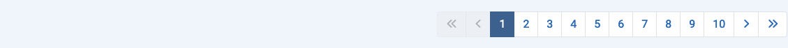

Scopo¶
La maggior parte delle componenti ha visualizzazioni a lista che mostrano elementi dal database. Possono esserci centinaia di elementi, migliaia forse, o persino milioni. Il Limite della Lista predefinito, il numero di elementi mostrato in una pagina dei risultati, è solitamente 20. Sotto ogni pagina dei risultati, se ci sono più risultati rispetto al limite attuale, troverai una barra di Paginazione:

Con il primo numero della barra di Paginazione selezionato, i primi 20 risultati verranno mostrati nella lista, o qualunque sia il numero di risultati impostato nel Limite della Lista. Seleziona il numero successivo o l'icona Avanti () per passare alla pagina successiva degli elementi.
Il numero massimo di pagine visualizzato in un'unica barra di paginazione è 10. Tuttavia, i numeri di pagina sopra e sotto la pagina attuale vengono visualizzati per facilitare il passaggio avanti o indietro di una pagina alla volta.
Ecco uno screenshot della lista dei Plugin dopo essere passati alla Pagina 10 con il Limite della Lista impostato a 5:

Le Icone
- Vai alla Prima pagina.
- Vai alla pagina Precedente.
- Vai alla pagina Successiva.
- Vai all'ultima pagina.
Nella prima pagina le icone della Prima pagina e della pagina Precedente sono disabilitate. Nell'ultima pagina le icone della pagina Successiva e dell' Ultima pagina sono disabilitate.
Tradotto da openai.com